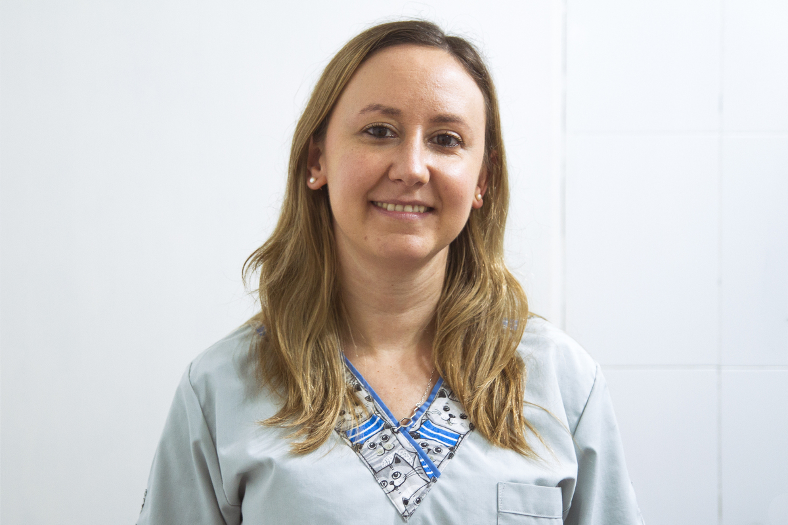

<div class="modal-body">

    <div class="row">
        <div class="col-md-12">
            <div class="exit-modal" data-dismiss="modal"><i class="fa fa-times"></i></div>

            <div class="profile">

                <div class="profile-icon">
                    
                    <ul class="profile-social alignc">
                        <li><a href="https://www.instagram.com/dvi_diag.vet/" target="_blank"><i
                                    class="fa fa-instagram"></i></a></li>
                        <li><a href="mailto: marianalopezmerlo@yahoo.com.ar"><i class="fa fa-envelope"></i></a></li>
                    </ul>
                </div>

                <div class="profile-text">

                    <span class="user-name">- ECOGRAFIA -</span>
                    <h2 class="modal-title">Dra. Mariana Lopez Merlo</h2>

                    <div class="row">
                        <div class="col-lg-12">
                            <h4 class="small-sub-title">- Bio -</h4>
                            <ul>
                                <p>
                                    Obtuvo su título de Médica Veterinaria en la Facultad de Ciencias Veterinarias de la
                                    Universidad Nacional de La Plata en el año 2010, con la distinción Joaquín V.
                                    González (otorgado por la Municipalidad de La Plata a los diez mejores promedios de
                                    egresados de la UNLP).
                                </p>
                                <p>
                                    Realizó su doctorado y trabajo posdoctoral como becaria de CONICET, estudiando
                                    aspectos relacionados con la reproducción y el diagnóstico clínico y
                                    ultrasonográfico de enfermedades reproductivas en pequeños animales, entre los años
                                    2012 y 2019.
                                </p>
                                <p>
                                    Forma parte del Servicio de Ultrasonografía del Hospital Escuela de la Facultad de
                                    Ciencias Veterinarias UNLP y se desempeña como docente en la Cátedra Métodos
                                    Complementarios de Diagnóstico en la misma institución, desde el año 2015 hasta la
                                    actualidad.
                                </p>
                                <p>
                                    Realizó atención clínica en consultorios privados entre los años 2010 y 2018. Se
                                    desempeña como ecografista en consultorios privados desde el año 2015 hasta la
                                    actualidad.
                                </p>
                            </ul>
                        </div>
                    </div>
                </div>
            </div>
        </div>
    </div>
</div>